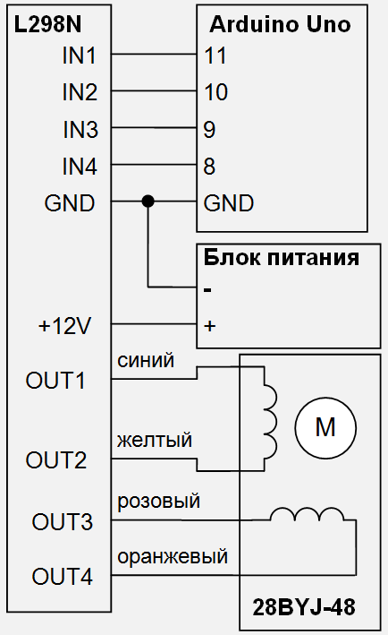
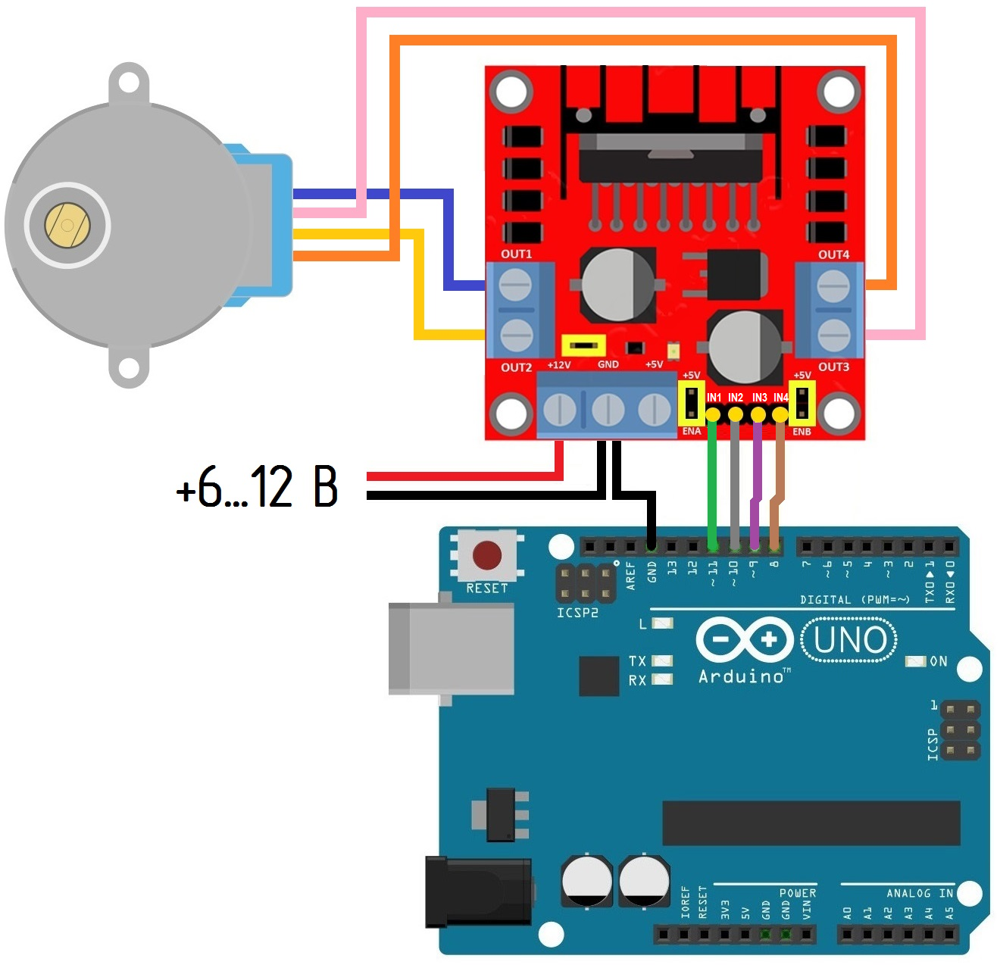

Управление шаговым двигателем 28BYJ-48 с помощью драйвера L293N
Для управления шаговым двигателем 28BYJ-48 можно использовать драйвер L293N. Схема подключения показана на рис. 1, монтажная схема - наа рис. 2.


Скетч для управления шаговым двигателем 28BYJ-48 с помощью драйвера L293N:
#include <Stepper.h> const int steps1 = 60; //количество шагов на 1 оборот // устанавливаем порты для подключения драйвера Stepper sm(steps1, 8, 9, 10, 11); void setup(){ sm.setSpeed(60); //установка скорости 60 об/мин } void loop() { sm.step(300); //вращаем ротор по часовой стрелки delay(1000); sm.step(-500); // вращаем ротор против часовой стрелки delay(1000); }
Скетч начинается с подключении стандартной библиотеки Stepper:
#include <Stepper.h>
В с ледующей строке константе с именем steps1 указываем количество шагов на оборот:
const int steps1 = 60;
Далее указываем указываем к выводам подключен шаговый двигатель:
Stepper sm(steps1, 8, 9, 10, 11);
В функции setup устанавливаем скорость шагового двигателя, вызывая функцию setSpeed()
sm.setSpeed(60);
В функции loop вызываем функцию step(), которая вращает двигатель на определенное количество шагов со скоростью, определяемой в функцией setSpeed().
sm.step(300);
sm.step(-500);